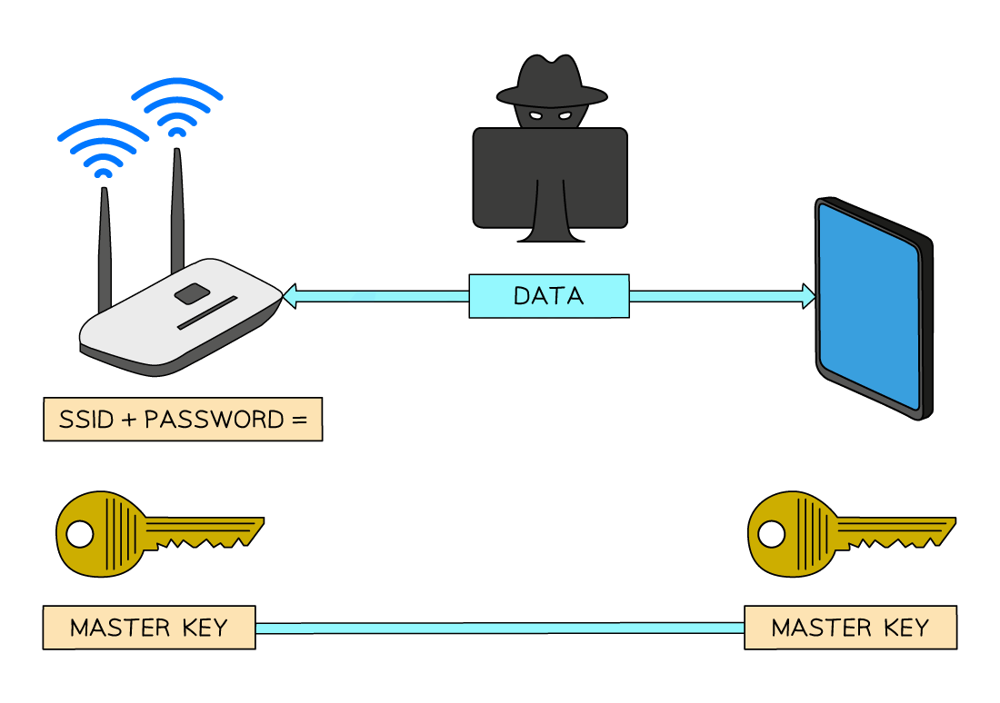
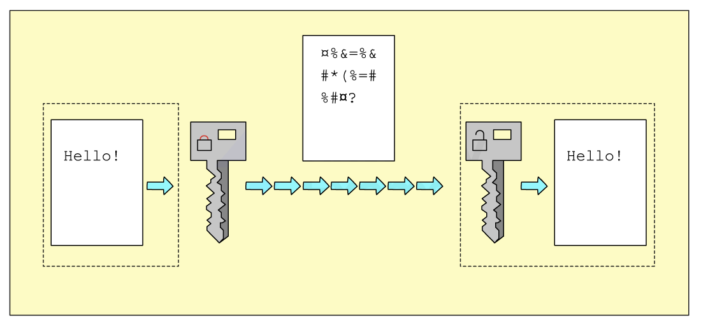
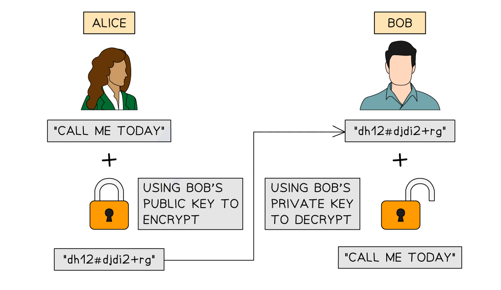
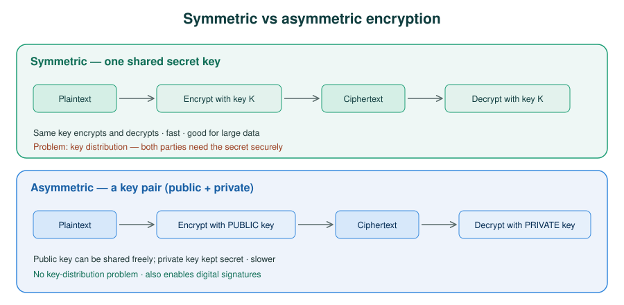
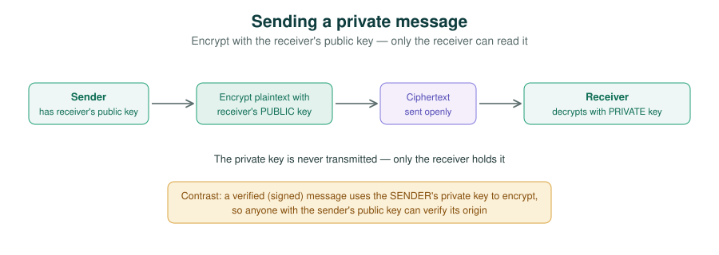
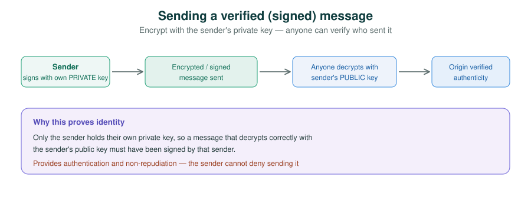
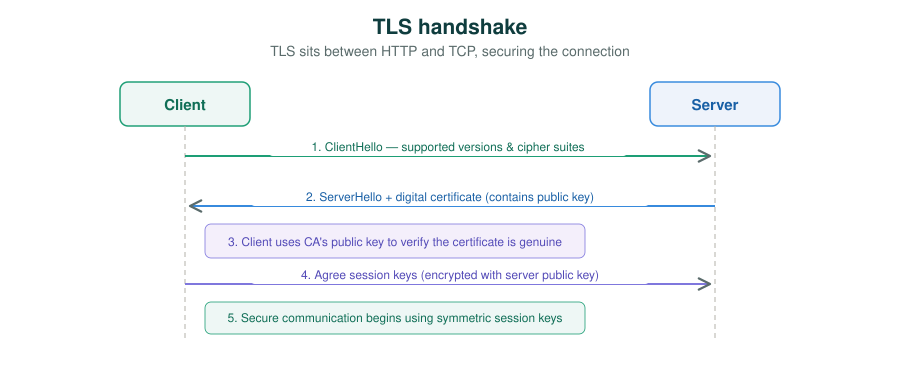
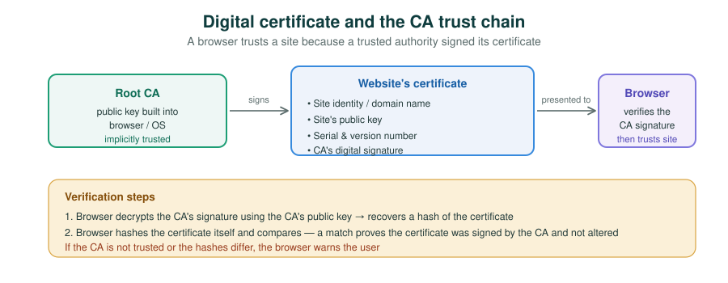
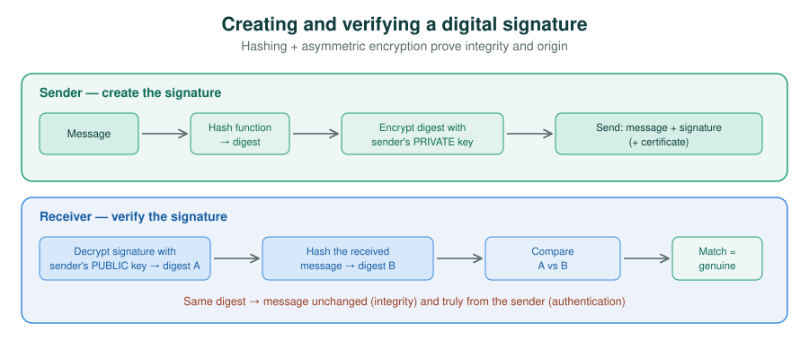

Encryption
How encryption works
What is encryption?
- Encryption is a method of scrambling data before being transmitted across a network
- Encryption helps to protect the contents from unauthorised access by making data meaningless
- While encryption is important on both wired and wireless networks, it’s even more critical on wireless networks due to the data being transmitted over radio waves, making it easy to intercept
How is wireless data encrypted?
- Wireless networks are identified by a ‘Service Set Identifier’ (SSID) which along with a password is used to create a ‘master key’
- When devices connect to the same wireless network using the SSID and password they are given a copy of the master key
- The master key is used to encrypt data into ‘cipher text’, before being transmitted
- The receiver uses the same master key to decrypt the cipher text back to ‘plain text’
- To guarantee the security of data, the master key is never transmitted. Without it, any intercepted data is rendered useless
- Wireless networks use dedicated protocols like WPA2 specifically designed for Wi-Fi security

How is wired data encrypted?
- Wired networks are encrypted in a very similar way to a wireless network, using a master key to encrypt data and the same key to decrypt data
- Encryption on a wired network differs slightly as it is often left to individual applications to decide how encryption is used, for example HTTPS
Plain text and cipher text ★
- Plain text is the readable original data; cipher text is the scrambled output produced by encryption, and decryption returns it to plain text
- Encryption is the process of converting plain text into cipher text using an algorithm and a key; decryption is the reverse process
Why use key cryptography ★
- Reasons examined: to prove a message is authentic / came from a trusted source; to ensure only the intended receiver can understand it; to ensure it has not been altered during transmission; and non-repudiation (neither sender nor receiver can deny the transmission)
- The two methods of key cryptography are symmetric and asymmetric key cryptography
A message is to be sent securely. Software uses a key to encrypt the message before it is sent.
(a)(i) Give two reasons for using key cryptography. [2] (a)(ii) Give two methods of key cryptography that can be used. [2] (b) When there is a secure exchange of key(s), the message is sent. The use of quantum cryptography is being considered for the secure exchange. (b)(i) State two possible benefits of using quantum cryptography. [2] (b)(ii) State two possible drawbacks of using quantum cryptography. [2]
Answer
Q8a(i) Any two from:
- To ensure the message is authentic // came from a trusted source
- To ensure that only the intended receiver is able to understand the message
- To ensure the message has not been altered during transmission
- Non-repudiation, neither the sender or receiver can deny the transmission occurred
Q8a(ii)
- Symmetric
- Asymmetric
Q8b(i) Any two from:
- Any eavesdropping can be identified (as the state will be changed)
- Integrity of the key once transferred can be guaranteed (cannot be copied and decrypted at a later date)
- Longer/more secure keys can be exchanged
Q8b(ii) Any two from:
- Limited range
- requires dedicated fibre (optic) line and specialist hardware
- cost of dedicated fibre (optic) line and specialist hardware is expensive
- polarisation of light may be altered whilst travelling down fibre optic cables
Define the following asymmetric key encryption terms: (a)(i) cipher text (a)(ii) public key
Answer
Q8(a)(i)
- Text encrypted from plain text using an encryption algorithm. // The result of putting plain text through an encryption algorithm.
Q8(a)(ii)
- A cryptographic/encryption key that can be obtained/used by anyone to send encrypted messages. // A key that is part of a matched pair // An encryption key known to all users // A decryption key obtained/used by anyone to decrypt sender’s digital signature.
Asymmetric encryption is a type of cryptography. Identify one other type of cryptography.
Answer
Q7(a) One from:
- Symmetric (cryptography / encryption)
- Quantum (cryptography)
State what is meant by a private key.
Answer
Q6(a) One mark for each correct point (Max 2)
- A private key is the unpublished/secret key/never transmitted anywhere.
- It has a matching public key
- It is used to decrypt data that was encrypted with its matching public key.
Symmetric & asymmetric encryption
How does symmetric encryption work?
- The sender uses a key to encrypt the data before transmission
- The receiver uses the same key to decrypt the data
- It’s usually faster, making it ideal for encrypting large amounts of data
- The significant downside is the challenge of securely sharing this key between the sender and receiver
- If a bad actor captures the key, they can decrypt all messages intercepted in transmission

Structure of Symmetric Encryption
How does asymmetric encryption work?
- Asymmetric encryption uses two keys:
- a public key for encryption
- and a private key for decryption
- Receivers openly share their public key
- Senders use this public key to encrypt the data
- The receiver’s private key is the only key that can decrypt the data and is kept locally on their side
- The public and private keys are created at the same time and are designed to work together in this way
- It is typically slower than symmetric encryption
- It is generally used for more secure and smaller data transactions, e.g. passwords, bank details

Structure of Asymmetric Encryption

Symmetric vs asymmetric — differences ★
- Symmetric: a single shared key encrypts and decrypts; fast and simple; suffers from the key distribution problem; shorter keys (e.g. 128/256 bits)
- Asymmetric: a mathematically linked key pair (public + private); one key encrypts, the matching key decrypts; only the public key is shared so the private key is never transmitted; much slower and needs much longer keys (e.g. 2048 bits) for the same security; supports sender verification / non-repudiation
- The two modes can be combined: asymmetric encryption solves the key-distribution problem, symmetric encryption is then used for the bulk data
Describe the differences between symmetric key and asymmetric key cryptography.
Answer
Q8(a) One mark per mark point (Max 3):
- MP1 Symmetric key encryption uses only one key but asymmetric encryption uses two keys // Asymmetric public and private keys are a mathematically linked pair, whereas symmetric uses the same key;
- MP2 Asymmetric key encryption uses one key to encrypt and the other key to decrypt, whereas symmetric key encryption uses the same key for both;
- MP3 Symmetric key encryption suffers from the key distribution problem, which the matched pair of keys for asymmetric has resolved;
- MP4 Asymmetric keys must be much larger/longer to achieve the same level of security as symmetric key encryption;
- MP5 Asymmetric key encryption allows verification of the sender, which symmetric key encryption does not.
Guidance: Candidates are asked to describe the difference, so both key types need to be included for each mark, where applicable.
State two differences between symmetric and asymmetric encryption.
Answer
Q6(a) One mark for each point:
- Symmetric encryption uses a single key and asymmetric encryption uses a pair of keys.
- The symmetric single key is used by all, whereas only one of the keys for asymmetric encryption is available to everyone / one of the asymmetric encryption keys needs to be kept secret.
Explain the differences between symmetric and asymmetric cryptography when encrypting and decrypting data.
Answer
Q5(b)
| Symmetric | Asymmetric |
|---|---|
| Uses a single key to encrypt and decrypt messages | Uses two keys (public and private) |
| The single key is shared between both parties | Only the public key is shared; the private key is kept secret |
| Higher risk of compromise if the key is intercepted | More secure as the private key is never shared |
| Simple process, carried out quickly | Much more complex, therefore slower |
| Key lengths are usually shorter (128/256 bits) | Key lengths are longer (e.g. 2048 bits) |
Encryption is used to alter data into a form that makes it meaningless if intercepted. Describe the purpose of asymmetric key cryptography.
Answer
Q9(a) One mark per mark point (Max 2):
- To provide better security …
- by using two different keys / a public key and a private key;
- one of the keys is used to encrypt the message;
- the matching key is used to decrypt the message. (Max 2)
- The sender takes the receiver’s public key, encrypts the plain text with it, and only the receiver’s matching private key can turn the cipher text back into plain text
- Why publishing the public key is safe — anyone may hold it, but it cannot decrypt; confidentiality rests on the private key never leaving the receiver
- Getting the public key safely — the key is taken from a digital certificate signed by a CA, so the sender knows it really belongs to the receiver
- This achieves confidentiality: only the intended holder of the private key can read the message

Outline the process that would allow an individual to use asymmetric key encryption to send a private message to an organisation.
Answer
Q8(b) One mark per mark point (Max 4):
- MP1 The organisation generates a matched pair of encryption keys;
- MP2 The organisation makes its public key available to the individual;
- MP3 The individual uses the public key to encrypt their message;
- MP4 … and sends this message to the organisation;
- MP5 The organisation decrypts the message using their private key.
Alternative answer (Max 4):
- MP6 The individual generates a matched pair of encryption keys;
- MP7 The individual sends their public key to the organisation;
- MP8 The individual uses their private key to encrypt their message;
- MP9 … and sends this message to the organisation;
- MP10 The organisation decrypts the message using the individual’s public key.
Guidance: The correct sequence of steps is what is important.
Sheila has a customer called Fred. Fred wants to send Sheila a confidential document as part of a transaction. Explain how Fred uses asymmetric encryption to send his document securely.
Answer
Q4 One mark per mark point (Max 4)
- Sheila’s computer uses an algorithm to generate a matching pair of keys private and public
- Sheila’s computer sends Fred’s computer Sheila’s public key // Fred’s computer acquires Sheila’s public key
- Fred’s computer encrypts the document/plain text using Sheila’s public key to create cipher text
- Fred’s computer sends the cipher text to Sheila’s computer. The cipher text can only be decrypted using Sheila’s private key // Sheila’s computer uses Sheila’s private key to decrypt the cipher text.
An organisation holds two asymmetric encryption keys, which they intend to use to receive secure transmissions. Explain how the organisation makes use of the two keys to receive a secure transmission.
Answer
Q7(b) One mark per mark point (Max 4)
- The two keys held by the organisation are a private key and a public key
- The organisation makes the public key available to anyone who wishes to send them secure transmissions // The sender obtains the organisation’s public key
- The sender uses the organisation’s public key to encrypt the message / plain text // The sender uses the organisation’s public key to turn the message into cipher text
- The organisation uses its private key to decrypt the message.
- To send a verified message, the sender encrypts with their own private key; anyone can then decrypt with the sender’s public key
- Because only the sender holds the private key, a message that is successfully decrypted with the public key must have come from that sender — this gives authentication and non-repudiation
- Note the reversal compared with a private message: private message → receiver’s public key; verified message → sender’s private key
- In the examined scenario a business signs a message with its private key and publishes its public key so a whole group of people can verify it

Outline the process that would allow a business to use encryption keys to send a verified message to a group of people.
Answer
Q8(b) One mark per mark point (Max 4):
- MP1 The organisation generates a matched pair of encryption keys;
- MP2 The organisation makes its public key available to the group of people / via its website;
- MP3 The organisation encrypts its message using its private key;
- MP4 … and sends it to the group of people;
- MP5 Anyone receiving the message can decrypt it using the organisation’s public key;
- MP6 Therefore, verifying the sender // Providing non-repudiation.
Guidance: The correct sequence of steps that is important.
Describe the process of asymmetric encryption.
Answer
Q6(b) One mark for each correct point (Max 2)
- The message to be sent is encrypted using the recipient’s public key. // The message to be sent is encrypted using the sender’s private key.
- The message is decrypted using the recipient’s private key. // The message is decrypted using the sender’s public key.
- Asymmetric encryption is used only to deliver a symmetric session key; the bulk data is then encrypted with that faster symmetric key
- Named algorithms — symmetric examples include AES; asymmetric examples include RSA
- Session key — a one-off symmetric key generated for a single connection and discarded when the connection ends
- Trade-off — symmetric is fast but needs a secure way to share the single key and gives no proof of who sent the data; asymmetric removes the key-sharing problem and supports signatures, but is far slower
Choosing an encryption type
- Symmetric encryption is fast but has key-sharing issues; asymmetric is slower but solves these issues.
- The choice should be made based on the situation’s needs: whether speed or security is more critical.
| Encryption Type | Suitable For | Reasons to choose |
|---|---|---|
| Symmetric | Large files, databases | - Fast and efficient for bulk data. - The same person encrypts and decrypts, e.g. when backing up data. |
| Asymmetric | Confidential/secret communications | - Sharing highly secure data, e.g. passwords, government communications |
Quantum cryptography
What is quantum cryptography?
- Quantum cryptography uses quantum mechanics to securely transmit encryption keys
- Its main goal is to enable unbreakable communication by detecting any attempt to intercept or tamper with the key
- The most well-known method is:
- Quantum Key Distribution (QKD) – uses quantum particles (like photons) to share a secret key between two parties securely
- It is based on the laws of quantum physics rather than mathematical formulae, so its security does not depend on the difficulty of problems such as factoring large primes
Purpose of quantum cryptography ★
- To provide a more secure / virtually unbreakable method of encryption than current methods
- To detect eavesdropping — measuring a quantum state disturbs it, so interception is visible
- To provide encryption that can be guaranteed for a longer period of time than current methods
- To use longer / more secure keys and protect data on fibre optic cables
Benefits of quantum cryptography
| Benefit | Explanation |
|---|---|
| Unbreakable key transmission | Uses quantum physics – measuring a quantum state disturbs it, so eavesdropping is detectable |
| Eavesdropper detection | Any interception changes the quantum state of the key, alerting the users |
| Perfect forward secrecy | Keys are used once and then discarded, reducing the impact of future key leaks |
| Keys are non-duplicable | The no-cloning theorem means a quantum key cannot be copied |
| Stronger than classical encryption | Not based on mathematical problems like factoring large primes, so it’s not vulnerable to advances in computing (e.g. quantum computers) |
Drawbacks of quantum cryptography
| Drawback | Explanation |
|---|---|
| Expensive and complex | Requires advanced technology, including specialised hardware like photon detectors and fibre-optic channels |
| Short distance limits | Works best over short ranges (limited by current fibre-optic and signal loss issues) |
| Slow transmission speed | QKD is typically slower than traditional key exchange methods |
| Still evolving | Technology is new and not yet widely available or standardised |
| Polarisation can change | The polarisation of light may be altered while travelling down fibre optic cables |
| Only secures key exchange | Quantum cryptography secures the key, but not the actual data encryption itself – traditional algorithms still needed |
| Misuse | Criminals and terrorists could use the technology to hide their communications |
Quantum cryptography secures the key, not the message itself. Always make this distinction to show clear understanding.
(a) Describe the purpose of quantum cryptography. [2] (b) Outline two benefits and two drawbacks of quantum cryptography. [4]
Answer
Q8(a) One mark per mark point for the purpose (Max 2)
- MP1 To provide a more secure method of cryptography/encryption than current methods // To provide a virtually unbreakable method of encryption // To detect eavesdropping.
- MP2 … using the laws of quantum physics rather than mathematical formulae to generate keys.
- MP3 To provide encryption that can be guaranteed for a longer period of time than current methods
Q8(b) One mark per benefit (Max 2)
- MP1 Better security for internet communication
- MP2 Can detect eavesdropping, enabling the receiver to request another key
- MP3 Virtually unhackable due to rapidly changing quantum states
- MP4 Keys are non-duplicable // No-cloning theorem
One mark per drawback (Max 2)
- MP5 Currently can only be used over relatively short distances
- MP6 Very expensive to implement initially due to costs of installation / hardware / implementation // Requires a dedicated line and specialist hardware
- MP7 The technology to fully implement quantum cryptography is not currently/readily available
- MP8 Photon polarization might be impacted in the travelling medium // It is possible for the polarisation of the light to be altered while travelling down fibre optic cables
- MP9 Due to the inherent security system generated by quantum cryptography, terrorists and other criminals can use the technology to hide their activities from government law enforcement
Identify two benefits and two drawbacks of quantum cryptography.
Answer
Q9(b) One mark per benefit (Max 2); one mark per drawback (Max 2). Two benefits and two drawbacks (any from the lists below).
Benefits (one mark each, Max 2):
- Provides security based on laws of physics rather than mathematical algorithms, so more secure
- To protect the security of data transmitted over fibre optic cables
- Virtually unhackable
- The performance of quantum cryptography is continuously improved, making it suitable for most valuable government/industrial secrets
- Longer keys can be used
- Eavesdropping can be detected
Drawbacks (one mark each, Max 2):
- Lacks many vital features such as digital signature, certified mail, etc.
- High cost of purchasing / maintaining equipment required
- Currently only works over relatively short distances
- Error rates are relatively high as technology is still being developed
- Polarisation of light can change during transmission
- Allows criminals and terrorists to hide their communications
Encryption is used to scramble data to make it meaningless if intercepted. Describe the purpose of quantum cryptography.
Answer
Q5(a) One mark per mark point (Max 2)
- Provides a virtually unbreakable encryption system / sends virtually un-hackable secure messages
- Uses laws / principles of quantum mechanics / properties of photons
- Detects eavesdropping because the properties of photons change when observed
- Protects security of data transmitted over fibre optic cables
- Enables the use of longer keys
Protocols
SSL/TLS
What is SSL?
- SSL (Secure Sockets Layer) is a security protocol used to encrypt data sent over the internet
- It is the deprecated predecessor of TLS — modern websites use TLS, although people often still refer to it loosely as “SSL”
- Helps to prevent eavesdropping, tampering, or man-in-the-middle attacks
- Commonly used for:
- Protecting websites
- Online payments
- Login credentials
- Creates a secure connection between a web server and a browser
What is TLS?
- TLS (Transport Layer Security) is the successor to SSL
- It performs the same functions but is more secure and efficient
- Modern websites use TLS, although people often still refer to it as “SSL”
- When you see HTTPS in the browser, it means TLS/SSL encryption is active
Purpose of SSL/TLS
- To establish an encrypted, authenticated communication channel between a client and a server over an insecure network
- To prevent eavesdropping (confidentiality), tampering (integrity) and impersonation (authentication)
When is SSL/TLS appropriate?
- Any exchange of sensitive data: online banking, e-commerce / online payments, login credentials, and secure API communication
- Whenever identity must be proved and data must not be read or altered in transit
How SSL/TLS works with digital certificates
- When you visit a secure website (e.g.
https://), the server sends your browser its digital certificate - The certificate contains:
- The server’s public key
- Information about the website and Certificate Authority (CA)
- A digital signature from the CA
- Your browser checks that the certificate is valid and trusted using the CA’s public key
- If trusted, a secure connection is established, often using a shared secret key (symmetric encryption) created during the handshake
The TLS handshake
- The client sends a ClientHello, the server replies with a ServerHello and its digital certificate
- The client verifies the certificate with the CA’s public key, and the two sides agree a shared session key
- All later traffic uses symmetric encryption, because it is much faster than asymmetric
- Where TLS sits — between the application layer (HTTP) and the transport layer (TCP), so HTTPS is simply HTTP carried over TLS

Summary: What a digital certificate does
| Component | Purpose |
|---|---|
| Public key | Used by your browser to create secure communication |
| Website identity | Shows who owns the key |
| Certificate Authority | Signs the certificate to confirm it’s trustworthy |
| Browser validation | Uses the CA’s public key to verify the certificate |
- TLS has replaced SSL — but both are encryption protocols used with digital certificates
- Always mention digital certificates when explaining how websites create secure connections
No past-paper sub-question in the current Ch17 set examines SSL/TLS directly; the four SSL/TLS exam points are retained here for syllabus coverage only.
Digital certificates
What is a digital certificate?
- A digital certificate is an electronic file that confirms someone’s identity and proves that a public key belongs to them
- It is issued by a trusted third party called a Certificate Authority (CA)
- A digital certificate includes:
- The owner’s public key
- The owner’s identity details (e.g. name, email, company)
- The expiry date of the certificate
- The Certificate Authority’s digital signature
- A serial number and version number

What a digital certificate proves ★
- It binds an identity to a public key, so anyone can trust that a public key really belongs to the claimed person or website
- The CA’s signature on the certificate shows it was issued by a trusted third party; browsers verify it with the CA’s public key
Describe what is meant by a digital certificate.
Answer
Q7(a) One mark per point (Max 3)
- MP1 A digital certificate is an electronic/online document.
- MP2 Used to authenticate/prove the identity of a website / the online identity of an individual/organisation.
- MP3 Typically issued by a CA (Certificate Authority).
- MP4 For example: it contains information identifying a website owner/individual and a public key.
Identify two items commonly found within a digital certificate.
Answer
Q5(a) Two from:
- Name of certificate holder // Subject
- Serial number
- Version number
- Expiration date // Start date // Validity (not before/not after)
- Certificate holder’s public key // Subject public key
- Subject digital signature
- Certificate Issuer // Digital signature of CA
Hash function
- A hash function is a one-way algorithm that takes an input (e.g. a message) and produces a fixed-length output, called a hash value or message-digest
- Key features:
- The output is always the same length, regardless of input size
- It is one-way — you cannot reverse it to get the original input
- Even a small change in input produces a completely different output
- Commonly used in digital signatures and password storage
- Think of it as a fingerprint for data
Message-digest
- A message-digest is the output (the hash value) produced when a message is processed through a hash function
- It is:
- A fixed-length summary of the original message
- Unique to the message (ideally – collisions are rare)
- Used to check whether a message has been altered
- Think of it as the unique ID or checksum of a message
How is a digital certificate acquired? ★
- Leila wants to be able to sign documents digitally
- She generates a key pair – one private key and one public key
- Leila sends a Certificate Signing Request (CSR) to a Certificate Authority (CA)
- This includes her public key and identity details
- The CA verifies Leila’s identity using documents or other checks
- If approved, the CA digitally signs a certificate and sends it back to Leila
- This certificate contains Leila’s public key, identity, and the CA’s signature
Who signs what when a certificate is issued ★
- The CSR carries the applicant’s public key and identity details and is signed with the applicant’s private key, proving they hold the matching key
- The CA signs the certificate with the CA’s own private key; browsers verify it with the CA’s public key
- Operating systems and browsers ship with the public keys of trusted root CAs, so a certificate from one of them is accepted while a self-signed one raises a warning
Explain the process by which an organisation may acquire its digital certificate.
Answer
Q6(b) One mark for each point (Max 4)
- The organisation requests a certificate from a Certificate Authority (CA)
- The organisation may send their public key to CA
- The organisation gathers all the information required by the CA in order to obtain their certificate, which includes information to prove their identity
- The CA verifies the organisation’s identity
- The CA generates / issues the certificate including the organisation’s public key (and other information).
A company requires a digital certificate to ensure the authenticity of its online communications. Outline the process followed to acquire a digital certificate.
Answer
Q9 One mark per mark point (Max 4)
- MP1: The company generates a public and private key pair locally using a web browser and an RSA key generator tool, which may be part of the CA’s web page
- MP2: The company requests a digital certificate from a Certificate Authority (CA)
- MP3: The CA responds with its public key and digital certificate
- MP4: … signed with its private key
- MP5: The company gathers authentication information e.g. its public key
- MP6: … and sends it to the CA signed with the company’s private key and encrypted with the CA’s public key
- MP7: The CA verifies the received information and generates/issues the digital certificate
State how a digital certificate is obtained.
Answer
Q7a Any three from:
- MP1 enquiry made to Certificate Authority (CA)
- MP2 enquirer’s details checked by CA
- MP3 if enquirer details verified by CA then public key is agreed
- MP4 CA creates/issues certificate that includes the enquirers public key
- MP5 encrypting data sent to/by CA with the CA’s public/private key
How is a digital certificate used to produce a digital signature? ★
- Leila writes a message she wants to send to Jonas
- She applies a hash function to the message to create a message-digest
- Leila then encrypts the message-digest using her private key
- This becomes her digital signature
- She sends Jonas:
- The original message
- Her digital signature
- Her digital certificate
- Jonas:
- Uses Leila’s public key (from the certificate) to verify the digital signature
- Uses the CA’s public key to verify that the certificate is genuine and hasn’t been forged
Checking a signature ★
- The verifier decrypts the signature with the sender’s public key to recover the digest, hashes the received message again and compares the two; a match means the message arrived unchanged
- Signing with the sender’s private key and checking with the sender’s public key gives authentication (it came from the claimed sender), integrity (it was not altered) and non-repudiation (the sender cannot deny sending it)
- Why the digest is signed, not the message — a hash gives a short fixed-length digest, so signing is quick and any change to the message changes the digest

A digital signature is used to validate the authenticity of an electronic message. In order to produce a digital signature, a digital certificate is required. (b)(i) Explain how a digital signature is produced before the message is sent. [3] (b)(ii) Explain how the digital signature can be checked on receipt to ensure that the message has not been altered during transmission. [4]
Answer
Q7b(i)
- MP1 The message is hashed with (the agreed hashing algorithm)…
- MP2 … to produce a message digest
- MP3 The message digest is then encrypted with the sender’s private key to form the digital signature
Q7b(ii) Any four from:
- MP1 The message together with the digital signature is decrypted using the receiver’s private key
- MP2 The digital signature received is decrypted with the sender’s public key to recover the message digest sent
- MP3 The decrypted message received is hashed with the agreed hashing algorithm to reproduce the message digest of the message received
- MP4 The two message digests are compared
- MP5 … if they are the same the message has not been altered // if they are different the message has been altered
Explain how a digital signature is used to verify a message when it is received.
Answer
Q6© One mark for each correct point (Max 4)
- The message together with the digital signature is decrypted using the receiver’s private key
- The digital signature received is decrypted with the sender’s public key to recover the message digest sent
- The decrypted message received is hashed with the agreed hashing algorithm to reproduce the message digest of the message received
- The two message digests are compared
- … if both digests are the same the message has not been altered // if they are different the message has been altered.
Explain the role of a digital certificate in creating a digital signature.
Answer
Q7(b) One mark per point (Max 2)
- MP1 The digital certificate provides the public key…
- MP2 …that can be used to validate the private key associated with the organisation/website/digital signature.
Explain why a digital certificate is required to validate a digital signature.
Answer
Q5(b) One mark per mark point (Max 3)
- A digital certificate provides a public key
- … which validates the private key used to create the digital signature
- It makes a digital signature virtually impossible to spoof // Provides evidence of signer identity that the document was not altered and the signatures are valid
- Non repudiation.
Summary
| Step | Purpose |
|---|---|
| Certificate issued by a CA | Proves the public key belongs to the sender |
| Certificate includes public key | Lets others verify digital signatures |
| CA’s digital signature on certificate | Shows it was issued by a trusted third party |
| Public verifies sender and message | Ensures authenticity and integrity of the message |
- The digital certificate proves ownership of a public key
- The digital signature proves a message came from the claimed sender and wasn’t altered
Don’t mix them up!
Exam Question Index
| Sub-question | Exam point | Source |
|---|---|---|
| P31 Q8(a)(i) | Encryption terminology (plain/cipher text) | 2026 Summer P31 Q8(a)(i) |
| P31 Q8(a)(ii) | Encryption terminology (public key) | 2026 Summer P31 Q8(a)(ii) |
| P31 Q8(b) | Sending a private message using a public key | 2026 Summer P31 Q8(b) |
| P32 Q8(a) | Encryption & decryption: symmetric vs asymmetric | 2026 Summer P32 Q8(a) |
| P32 Q8(b) | Sending a verified message using a private key | 2026 Summer P32 Q8(b) |
| P33 Q8(a) | Quantum cryptography (purpose) | 2026 Summer P33 Q8(a) |
| P33 Q8(b) | Quantum cryptography (benefits & drawbacks) | 2026 Summer P33 Q8(b) |
| P31 Q5(a) | Digital certificates (contents) | 2025 Winter P31 Q5(a) |
| P31 Q5(b) | Digital signatures (role of certificate) | 2025 Winter P31 Q5(b) |
| P32 Q7(a) | Encryption terminology (types of cryptography) | 2025 Winter P32 Q7(a) |
| P32 Q7(b) | Sending a private message using a public key | 2025 Winter P32 Q7(b) |
| P33 Q9 | Acquiring a digital certificate | 2025 Winter P33 Q9 |
| P32 Q4 | Sending a private message using a public key | 2024 Summer P32 Q4 |
| P31 Q7(a) | Digital certificates (what it is) | 2024 Summer P31 Q7(a) |
| P31 Q7(b) | Digital signatures (role of certificate) | 2024 Summer P31 Q7(b) |
| P32 Q5(a) | Quantum cryptography (purpose) | 2023 Summer P32 Q5(a) |
| P32 Q5(b) | Encryption & decryption: symmetric vs asymmetric | 2023 Summer P32 Q5(b) |
| P31 Q9(a) | Encryption terminology (purpose of asymmetric) | 2023 Summer P31 Q9(a) |
| P31 Q9(b) | Quantum cryptography (benefits & drawbacks) | 2023 Summer P31 Q9(b) |
| P31 Q6(a) | Encryption terminology (private key) | 2022 Winter P31 Q6(a) |
| P31 Q6(b) | Encryption & decryption: symmetric vs asymmetric | 2022 Winter P31 Q6(b) |
| P31 Q6© | Digital signatures (verifying a message) | 2022 Winter P31 Q6© |
| P32 Q6(a) | Encryption & decryption: symmetric vs asymmetric | 2022 Winter P32 Q6(a) |
| P32 Q6(b) | Acquiring a digital certificate | 2022 Winter P32 Q6(b) |
| P32 Q7(a) | Acquiring a digital certificate | 2022 Summer P32 Q7(a) |
| P32 Q7(b)(i) | Digital signatures (producing a signature) | 2022 Summer P32 Q7(b)(i) |
| P32 Q7(b)(ii) | Digital signatures (checking a signature) | 2022 Summer P32 Q7(b)(ii) |
| P31 Q8(a)(i) | Why use key cryptography (reasons) | 2022 Summer P31 Q8(a)(i) |
| P31 Q8(a)(ii) | Why use key cryptography (methods) | 2022 Summer P31 Q8(a)(ii) |
| P31 Q8(b)(i) | Quantum cryptography (benefits) | 2022 Summer P31 Q8(b)(i) |
| P31 Q8(b)(ii) | Quantum cryptography (drawbacks) | 2022 Summer P31 Q8(b)(ii) |
| P31 Q5(a) | Mis-filed: hashing for file access (§13.2), not Security | 2024 Winter P31 Q5(a) |
| P31 Q5(b) | Mis-filed: hashing collision resolution (§13.2), not Security | 2024 Winter P31 Q5(b) |
| P31 Q3(a) | Mis-filed: hashing for file access (§13.2), not Security | 2023 Summer P31 Q3(a) |
| P31 Q3(b) | Mis-filed: hashing collision handling (§13.2), not Security | 2023 Summer P31 Q3(b) |
| P32 Q3(a) | Mis-filed: hashing collision definition (§13.2), not Security | 2023 Winter P32 Q3(a) |
| P32 Q3(b) | Mis-filed: hashing collision resolution (§13.2), not Security | 2023 Winter P32 Q3(b) |